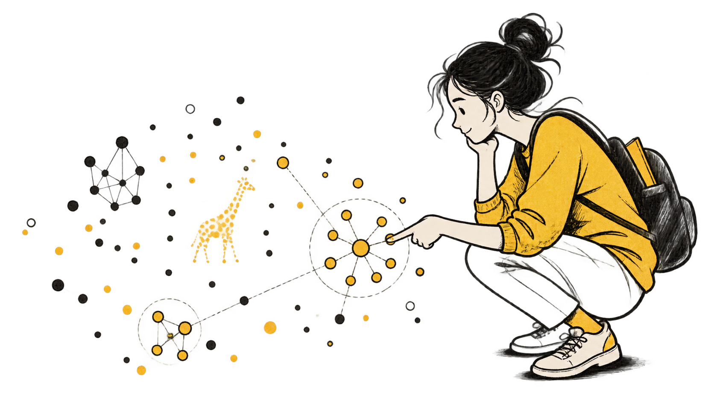
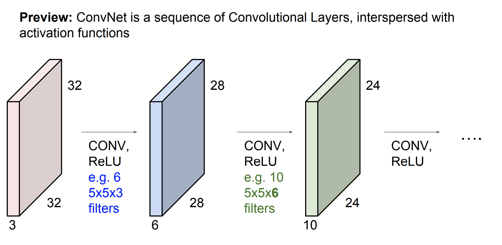
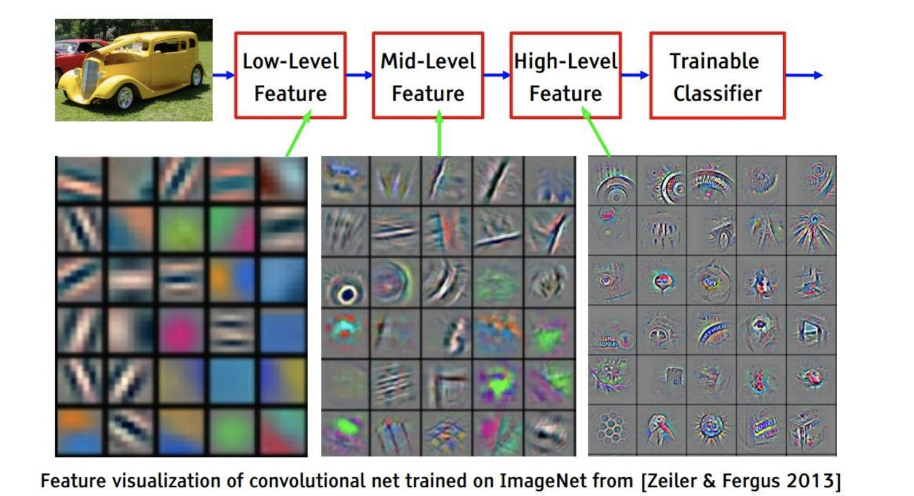
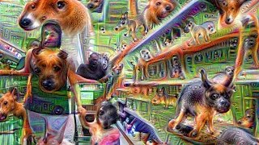
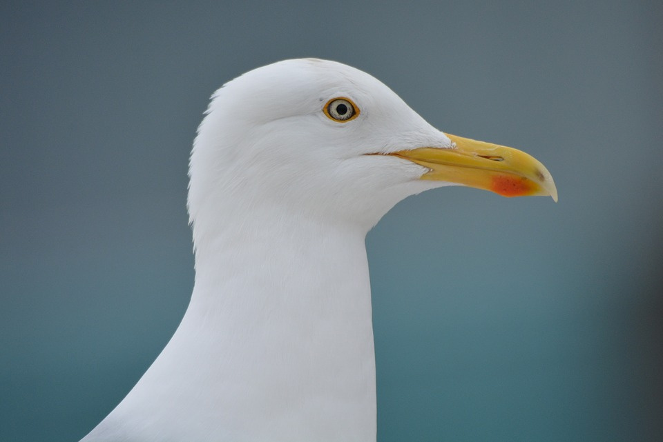

МФТИ · Машинное обучение · Нейронные сети и свёртки
Нейронные сети и свёртки
От похожих объектов – к локальным шаблонам и вектору признаков

МФТИ · Машинное обучение · Нейронные сети и свёртки
Продолжим менять представление
Теперь преобразование использует соседство пикселей и общие веса.
Сначала обучим новые признаки, затем используем устройство изображения.
МФТИ · Машинное обучение · Нейронные сети и свёртки
Что осталось с предыдущей лекции?
Независимость наблюдений ≠ независимость признаков.
Линейный классификатор: одна граница. kNN: сравнение с обучающими объектами.
Отступ отвечает на вопрос: насколько уверенно объект расположен относительно границы?
Геометрический отступ получается после деления на .
МФТИ · Машинное обучение · Нейронные сети и свёртки
От one-hot – к обучаемой таблице
One-hot-векторы разных слов ортогональны. Эмбеддинги могут отражать сходство контекстов.
Вектор слова берём из таблицы по индексу – полный one-hot хранить не нужно.
Пары «слово – контекст» получаем из текста без ручной разметки. Частоты слов несбалансированы.
МФТИ · Машинное обучение · Нейронные сети и свёртки
Что значит «похожие объекты»?
Выбираем пространство объектов и пространство ответов .
Потеря оценивает расхождение предсказания и цели. «Похожесть» зависит от выбранной задачи.
МФТИ · Машинное обучение · Нейронные сети и свёртки
Какое сходство мы хотим перенести?
В исходных данных
Слова встречаются в похожих контекстах.
«кошка спит»
«собака спит»
В представлении
Векторы получают большой скалярный отклик.
В Word2Vec – вектор слова, – вектор контекста.
Для классификации изображений цель другая: разные изображения кошек должны вести к одному классу.
МФТИ · Машинное обучение · Нейронные сети и свёртки
Линейный слой сравнивает с шаблоном
– признаки объекта; – обучаемые веса для класса .
– оценка класса; – смещение; – угол между векторами.
При фиксированных длинах отклик максимален у совпадающих направлений. Без нормировки важны и длины.
МФТИ · Машинное обучение · Нейронные сети и свёртки
Нормаль задаёт направление роста скора
Два класса в пространстве признаков.
Справа – класс 1. Слева – класс 0.
Граница s = 0 перпендикулярна вектору w.
Учебные точки и заданные веса.
МФТИ · Машинное обучение · Нейронные сети и свёртки
Три класса – три вектора весов
Семь объектов: 2 синих, 2 красных, 3 зелёных.
Каждый вектор задаёт свой скор. Выбрать класс с наибольшим скором.
Здесь b₁ = b₂ = b₃ = 0; веса заданы для примера.
МФТИ · Машинное обучение · Нейронные сети и свёртки
Что считает умножение на матрицу?
Строки – векторы весов трёх классов.
Максимальный скор: класс 1.
Цвет строки совпадает с цветом скора и класса.
Строки – векторы весов трёх классов.
Максимальный скор: класс 1.
Цвет строки совпадает с цветом скора и класса.
Строки – векторы весов трёх классов.
Максимальный скор: класс 1.
Цвет строки совпадает с цветом скора и класса.
Строки – векторы весов трёх классов.
Максимальный скор: класс 2.
Цвет строки совпадает с цветом скора и класса.
Строки – векторы весов трёх классов.
Максимальный скор: класс 2.
Цвет строки совпадает с цветом скора и класса.
Строки – векторы весов трёх классов.
Максимальный скор: класс 3.
Цвет строки совпадает с цветом скора и класса.
Строки – векторы весов трёх классов.
Максимальный скор: класс 3.
Цвет строки совпадает с цветом скора и класса.
Строки – векторы весов трёх классов.
Максимальный скор: класс 3.
Цвет строки совпадает с цветом скора и класса.
МФТИ · Машинное обучение · Нейронные сети и свёртки
Скор ещё не вероятность
Для того же объекта получены три скора:
Побеждает класс 1. Положительных скоров может быть несколько.
Скоры перед softmax – логиты. Все классы нормируются вместе.
МФТИ · Машинное обучение · Нейронные сети и свёртки
Какой шаблон победил в каждой области?
В каждой точке выбирается класс с наибольшим скором.
Цвет показывает выбранный класс.
На границе два наибольших скора равны.
Те же три шаблона и те же семь объектов.
МФТИ · Машинное обучение · Нейронные сети и свёртки
Когда это «ближайший шаблон»?
В этом примере длины всех трёх весов равны 2.
– расстояние от объекта до шаблона .
Наибольший скор ↔ ближайший шаблон.
Обученные веса не обязаны быть средними векторами классов.
МФТИ · Машинное обучение · Нейронные сети и свёртки
От объекта к предсказанию
Объект уже задан своим признаковым описанием.
Объект
Исходное
признаковое описание
Классификатор
Предсказание
– исходный объект; – то же описание на входе классификатора.
Классификатор работает с исходными признаками.
Как научиться строить другие признаки?
МФТИ · Машинное обучение · Нейронные сети и свёртки
Можно обучать и само построение признаков
Построить новые признаки преобразованием с параметрами .
Объект
Обучаемый энкодер
(преобразование признаков)
Классификатор
Предсказание
или
– параметры извлекателя; – параметры классификатора; – все параметры.
Обучать оба блока по одной функции потерь для конечной задачи.
Нейросеть задаёт извлекатель цепочкой простых преобразований.
МФТИ · Машинное обучение · Нейронные сети и свёртки
Один нейрон строит один скрытый признак
Скрытый (латентный) признак вычисляется внутри модели.
Вход: . Сначала взвешенная сумма, затем функция активации.
Нейрон – аффинное преобразование и функция активации.
МФТИ · Машинное обучение · Нейронные сети и свёртки
Несколько нейронов образуют слой
Каждая строка задаёт свой вектор весов. – вектор смещений.
Три линейных отклика из двух координат. Ранг не превышает 2.
Строки задают обучаемые направления; они не обязаны образовывать базис.
МФТИ · Машинное обучение · Нейронные сети и свёртки
Активация меняет каждый признак отдельно
Применить одну и ту же функцию к каждому числу в .
Отрицательный отклик стал нулём. Положительные сохранились.
Размерность осталась той же. – новые признаки для следующего слоя.
МФТИ · Машинное обучение · Нейронные сети и свёртки
Теперь работаем с данными в новых признаках
Теперь шаблон каждого класса живёт в трёхмерном пространстве .
Строка весов → скор класса. Побеждает наибольший скор.
Скрытый слой строит признаки; выходной слой использует их для задачи.
МФТИ · Машинное обучение · Нейронные сети и свёртки
Как читать схему сети?
Кружок – одно число. Связи – веса, которые входят во взвешенную сумму.
Здесь два обучаемых преобразования и один скрытый слой признаков.
, , ; – пространство до активации.
МФТИ · Машинное обучение · Нейронные сети и свёртки
Добавим ещё один скрытый слой
φ – поэлементная функция активации.
Сеть учит признаки и шаблоны последнего слоя вместе.
Кружки – отдельные числа. Схема 2 → 3 → 2 → 3.
МФТИ · Машинное обучение · Нейронные сети и свёртки
Зачем нужны функции активации? Пример XOR
Учебная бинарная задача XOR: одинаковые цвета в противоположных углах.
Синий – класс 0; красный – класс 1.
Одна прямая эти классы не разделит.
Каскад без активаций остаётся аффинным.
Меняется запись, но не класс отображений.
МФТИ · Машинное обучение · Нейронные сети и свёртки
Пример функции активации ReLU
Сложение не сохраняется.
Правило меняется в нуле. Функция непрерывна, но нелинейна.
МФТИ · Машинное обучение · Нейронные сети и свёртки
В новых признаках задача линейно разделима
ReLU: . Синий – класс 0; красный – класс 1.
Исходные признаки
Новые признаки
Класс 1, если . Теперь хватает прямой.
МФТИ · Машинное обучение · Нейронные сети и свёртки
Как найти параметры преобразований?
ℓ – функция потерь; θ – все веса и смещения; η > 0 – размер шага.
Обратное распространение вычисляет градиент по цепному правилу.
Существование подходящих весов ещё не гарантирует, что обучение их найдёт.
МФТИ · Машинное обучение · Нейронные сети и свёртки
Как цепное правило проходит через выход?
Бинарный выход:
– целевая метка; – вероятность класса 1.
Обратный проход вычисляет градиент; оптимизатор делает шаг.
МФТИ · Машинное обучение · Нейронные сети и свёртки
Одна активация – две роли
Прямой проход
Активация меняет представление объекта.
Обратный проход
Производная влияет на градиент.
У ReLU справа наклон 1, слева – 0.
Нелинейность помогает представить ответ; её производная влияет на обучение.
Сравним формы активаций и их производных.
МФТИ · Машинное обучение · Нейронные сети и свёртки
Sigmoid: на краях градиент ослабевает
Функция
Производная
Выход от 0 до 1; максимальный наклон – 0.25 при z = 0.
Жёлтые области: функция насыщается, производная близка к нулю.
Sigmoid полезна на бинарном выходе; в скрытых слоях важно следить за насыщением.
МФТИ · Машинное обучение · Нейронные сети и свёртки
Tanh: знак сохраняется, насыщение тоже
Функция
Производная
Tanh – гиперболический тангенс; выход от −1 до 1.
В нуле наклон – 1. Жёлтые области: насыщение и малая производная.
Нечётность функции не гарантирует нулевое среднее её выходов.
МФТИ · Машинное обучение · Нейронные сети и свёртки
ReLU: справа градиент проходит, слева – нет
Функция
Производная
Справа функция не насыщается: наклон равен 1. Слева отклик и наклон равны 0.
На отрицательной стороне этот путь не передаёт градиент к входу нейрона.
В нуле обычной производной нет; для обратного прохода выбирают соглашение.
МФТИ · Машинное обучение · Нейронные сети и свёртки
Как глубина влияет на градиент?
В обратном проходе локальные производные перемножаются.
Маленькие множители могут ослаблять сигнал; нулевой множитель обнуляет этот путь.
Только множители активаций: полный градиент содержит ещё веса и другие пути.
МФТИ · Машинное обучение · Нейронные сети и свёртки
Активацию выбирать под роль слоя
| Активация | Когда полезна форма выхода | Что проверить при обучении |
|---|---|---|
| Sigmoid | Значение от 0 до 1, например бинарный выход | Насыщение скрытых нейронов |
| Tanh | Нужен ограниченный выход обоих знаков | Насыщение при больших |z| |
| ReLU | Скрытый слой полносвязной или свёрточной сети | Долю постоянно неактивных нейронов |
Сравнивать функцию потерь, масштабы активаций и градиентов.
Выбор активации связан с инициализацией, шагом обучения и устройством сети.
ReLU – разумная отправная точка для нашего примера, а не универсальный победитель.
МФТИ · Машинное обучение · Нейронные сети и свёртки
Что показывает картинка скрытого нейрона?
Каждая точка – вход
Цвет в Playground – значение одного скрытого признака в этой точке.
Каждый запуск – пример
Граница зависит от признаков, архитектуры и начальных весов.
Несколько запусков не доказывают, что одна активация всегда быстрее.
Не путать карту значений признака с облаком объектов в скрытом пространстве.
МФТИ · Машинное обучение · Нейронные сети и свёртки
Свёрточные нейронные сети
От общих преобразований признаков – к устройству изображения.
Локальные шаблоны и общие веса.
МФТИ · Машинное обучение · Нейронные сети и свёртки
Кошка сдвинулась. Класс изменился?
Значения многих пикселей изменились. Класс остался тем же.
Нужно использовать соседство пикселей и искать один шаблон в разных местах.
МФТИ · Машинное обучение · Нейронные сети и свёртки
Что сохраняет перестановка пикселей?
Одна фиксированная перестановка для всех объектов train и test.
– перестановочная матрица; – веса полносвязного слоя.
Числа сохраняются. Пространственное соседство меняется.
Класс полносвязных моделей тот же; траектория случайного обучения не обязана совпасть.
МФТИ · Машинное обучение · Нейронные сети и свёртки
Какой шаблон узнаёт этот рисунок?
Объект
Чёрное: 1 · белое: 0
Вертикаль
Горизонталь
Диагональ
Отклик – сумма произведений соответствующих пикселей.
Три заданных шаблона 3×3; смещения равны нулю. Это учебный пример.
МФТИ · Машинное обучение · Нейронные сети и свёртки
Как маленький участок даёт одно число?
Один канал: участок 5×5 и ядро 5×5 разворачиваем в два вектора.
Перемножаем соответствующие числа, складываем и добавляем смещение .
МФТИ · Машинное обучение · Нейронные сети и свёртки
Как одно окно заполняет карту 2×2?
Вход 4×4
Ядро
b = 0, шаг 1
Выход 2×2
Выберите шаг или запустите анимацию.
Одно и то же ядро во всех четырёх положениях. В этом примере выход равен центральному пикселю каждого окна.
МФТИ · Машинное обучение · Нейронные сети и свёртки
Где на фотографии откликнулся фильтр?
Представим фильтр, который сильнее отвечает на границу лепестка и фона. Одни и те же веса проверяют разные участки.
Карта откликов
Положение ярких ячеек соответствует месту найденного шаблона.
Иллюстрация условная: карта откликов нарисована для объяснения и не является результатом запуска обученной модели.
МФТИ · Машинное обучение · Нейронные сети и свёртки
Что в изображении пространственное, а что нет?
Высота и ширина задают соседство пикселей. RGB – три значения в каждой точке.
Фильтр 5×5 охватывает все три канала.
У RGB-фильтра 3·5·5 = 75 весов. Число выходных карт задаётся числом фильтров.
МФТИ · Машинное обучение · Нейронные сети и свёртки
Что именно суммирует свёртка?
Для одного выходного канала: суммируем по окну и всем входным каналам.
– число входных каналов; – сторона ядра; – положение окна.
Здесь шаг 1 и нет дополнения границ. В ML это обычно называют свёрткой; формально записана кросс-корреляция.
МФТИ · Машинное обучение · Нейронные сети и свёртки
Откуда возьмутся четыре карты вместо одной?
В обычной свёртке каждый фильтр охватывает все три входных канала.
Четыре фильтра формируют четыре выходные карты.
Выход: .
Параметров: .
МФТИ · Машинное обучение · Нейронные сети и свёртки
Одного шаблона кошки недостаточно
Кошки бывают разного размера и в разных позах. Полезнее собрать признаки из повторяющихся элементов.
Карта откликов одного слоя становится входными каналами следующего.
МФТИ · Машинное обучение · Нейронные сети и свёртки
Как нейрон второго слоя увидит больший участок?
Рецептивное поле – часть входа, влияющая на выбранный выходной элемент.
Два слоя с шагом 1 → поле на входе.
МФТИ · Машинное обучение · Нейронные сети и свёртки
У вектора больше нет пространственных осей
– число каналов слоя . Три свёртки 3×3: шаг 1, без дополнения; между ними – функции активации.
– веса; – смещения и оценки классов.
Карта 1×1 – уже вектор. Но одинаковый ответ при сдвиге ещё не гарантирован.
МФТИ · Машинное обучение · Нейронные сети и свёртки
Карта признаков – точка нового пространства
– число каналов, высота и ширина слоя; vec – развёртка тензора в вектор.
Развёртка меняет запись. Пространственное соседство хранится в устройстве слоя.
Тензоры имеют оси: канал, высота, ширина.
МФТИ · Машинное обучение · Нейронные сети и свёртки
Свёртку можно записать матрицей
– развёртка по строкам; – матрица свёртки.
Каждая строка выбирает одно окно. Веса ядра повторяются, остальные коэффициенты – нули.
– вектор единиц: одно смещение добавляется в каждой позиции.
Без смещения отображение линейное. Со смещением – аффинное.
МФТИ · Машинное обучение · Нейронные сети и свёртки
Где в матрице повторяются веса фильтра?
Девять весов ядра повторяются в четырёх строках матрицы, но выбирают разные пиксели входа.
МФТИ · Машинное обучение · Нейронные сети и свёртки
Зачем между свёртками нелинейность?
Даже со смещениями каскад остаётся аффинным.
ReLU применяется к каждому числу: .
– номер слоя; – признаки; – матрица свёртки и смещения.
МФТИ · Машинное обучение · Нейронные сети и свёртки
Что ReLU делает с картой откликов?
До ReLU: учебная карта 2×2
После ReLU
Форма карты та же. Меняются значения, а не положения пикселей.
МФТИ · Машинное обучение · Нейронные сети и свёртки
Из чего состоит одно преобразование?
Сначала свёртка со смещением, затем поэлементная активация.
Общие веса задают локальный шаблон. ReLU переключает правило по значениям входа.
Если убрать активации, глубина сама по себе не добавит нелинейности.
МФТИ · Машинное обучение · Нейронные сети и свёртки
Как карта превращается в класс?

Дальше получаем вектор признаков и передаём его классификатору.
МФТИ · Машинное обучение · Нейронные сети и свёртки
Кто выбирает полезные шаблоны?
Мы задаём устройство сети и цель. Веса фильтров обучаются вместе с классификатором.
Градиенты функции потерь вычисляются по цепному правилу.
Один общий фильтр получает вклад от всех позиций, где он был применён.
МФТИ · Машинное обучение · Нейронные сети и свёртки
От полосок – к сочетаниям признаков

Ранние признаки переиспользуются: границы полезны и для автомобиля, и для птицы.
МФТИ · Машинное обучение · Нейронные сети и свёртки
Что здесь нарисовано?
Ранние признаки: цвет и направление
Поздние: сочетания и части объектов
Вес фильтра, карта откликов и изображение, усиливающее отклик, – три разных объекта.
МФТИ · Машинное обучение · Нейронные сети и свёртки
Из простых элементов складывается кошка
Как в рисунке из символов: палочки и углы могут складываться в узнаваемую форму.
В сети комбинации обучаются по задаче. Эта схема – аналогия, а не буквальный словарь её фильтров.
МФТИ · Машинное обучение · Нейронные сети и свёртки
Как показать признак из многих каналов?
Можно найти входы с сильным откликом или менять вход, усиливая выбранную активацию.
Получившаяся картинка объясняет отклик, но не является многоканальным тензором весов.
Разные методы визуализации отвечают на разные вопросы.
МФТИ · Машинное обучение · Нейронные сети и свёртки
Инвариантность: ответ не меняется
– решение о классе; – допустимое преобразование входа.
Желаемое свойство: ответ не меняется, пока преобразование сохраняет класс.
МФТИ · Машинное обучение · Нейронные сети и свёртки
А что происходит с картой откликов?
Сдвигаем изображение вправо – отклик на тот же локальный признак смещается вправо.
Схема поясняет положение отклика; это не измерение обученной сети. Шаг 1, вдали от границ.
МФТИ · Машинное обучение · Нейронные сети и свёртки
Эквивариантность: карта сдвигается вместе с входом
– сдвиг входа, – соответствующий сдвиг выходной карты.
Для обычной свёртки с шагом 1 – на бесконечной решётке либо вдали от затронутых границ.
МФТИ · Машинное обучение · Нейронные сети и свёртки
Почему именно свёртка?
На конечной решётке с циклическими сдвигами:
Линейность + одинаковое правило во всех позициях → циклическая свёртка.
Представим вход как взвешенную сумму единичных импульсов.
Сдвиг импульса сдвигает отклик; линейность складывает взвешенные отклики.
Для обычного конечного изображения границы требуют отдельного условия. Нелинейные функции тоже могут быть эквивариантными.
МФТИ · Машинное обучение · Нейронные сети и свёртки
Сжали до 1×1. Ответ уже не зависит от сдвига?
Не обязательно. При сдвиге могут измениться пиксели, попавшие в итоговое рецептивное поле.
Контрпример: фильтр [1, 0] даёт один выход. Сдвиг входа меняет это число.
Устойчивость всей сети зависит от слоёв, границ и обучения; одна форма тензора её не гарантирует.
МФТИ · Машинное обучение · Нейронные сети и свёртки
DeepDream: усиливаем то, на что сеть откликается

Меняем входное изображение градиентным подъёмом, увеличивая активации выбранного слоя или канала.
Повторяющиеся образы показывают, что метод усиливает признаки, а не доказывает, что модель «видит» объект как человек.
МФТИ · Машинное обучение · Нейронные сети и свёртки
Теперь меняем вход, а не веса
– выбранный отклик сети; – размер шага.
При обучении меняли параметры, уменьшая потери. Здесь фиксируем параметры и усиливаем отклик.
Обратное распространение вычисляет градиент. Оно не делает свёртку обратимой.
МФТИ · Машинное обучение · Нейронные сети и свёртки
Зачем чайке красное пятно на клюве?

Какую задачу может решать этот заметный признак?
Кому он нужен: взрослой птице или птенцу?
МФТИ · Машинное обучение · Нейронные сети и свёртки
Не вся птица, а важный сигнал
В рассказе из лекции птенец реагирует на заметный сигнал у клюва родителя.
Для поведения может быть достаточно нескольких признаков.
Это биологическая аналогия, а не утверждение, что мозг устроен как CNN.
МФТИ · Машинное обучение · Нейронные сети и свёртки
Сигнал может быть сильнее естественного
В рассказе из лекции: полосатый искусственный стимул вызывает особенно сильную реакцию.
Аналогия с визуализацией: «сильнее активирует» не равно «больше похоже для человека».
Схема передаёт рассказ; это не точная реконструкция исторического эксперимента.
МФТИ · Машинное обучение · Нейронные сети и свёртки
Пять классов: что возвращает модель?
Вход: изображение → 784 числа.
Для обучения
Передать logits в CrossEntropyLoss.
Цель – индекс одного из пяти классов.
Для оценки
Выбрать argmax по оси классов.
Для пакета форма выхода: [batch, 5].
Порог 0.5 применяют к вероятности в бинарной задаче, а не к первому логиту.
МФТИ · Машинное обучение · Нейронные сети и свёртки
Опыт с перестановкой нужно закончить
На занятии возникли ошибки форм и качества. Успешного итогового сравнения нет.
- Одна перестановка для train и test.
- Одинаковые формы входов перед моделью.
- Обучение и оценка используют преобразованные данные.
- Полный запуск с начала и сохранённые результаты.
Ожидаемая эквивалентность полносвязной модели – математическое утверждение.
Причина сбоя конкретного запуска по записи окончательно не установлена.
МФТИ · Машинное обучение · Нейронные сети и свёртки
Что мы построили?
Одни веса ищут шаблон в разных местах. Нелинейности позволяют собирать сложные признаки.
Свёртка переносит сдвиг в карту откликов; инвариантность ответа – отдельное требование.
Проверьте себя: почему одного линейного каскада мало и почему 1×1 не доказывает инвариантность?